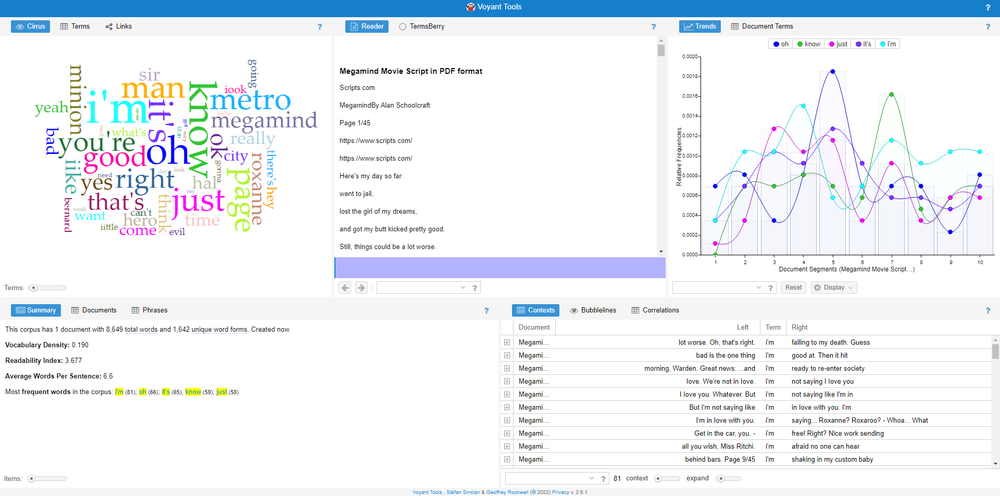
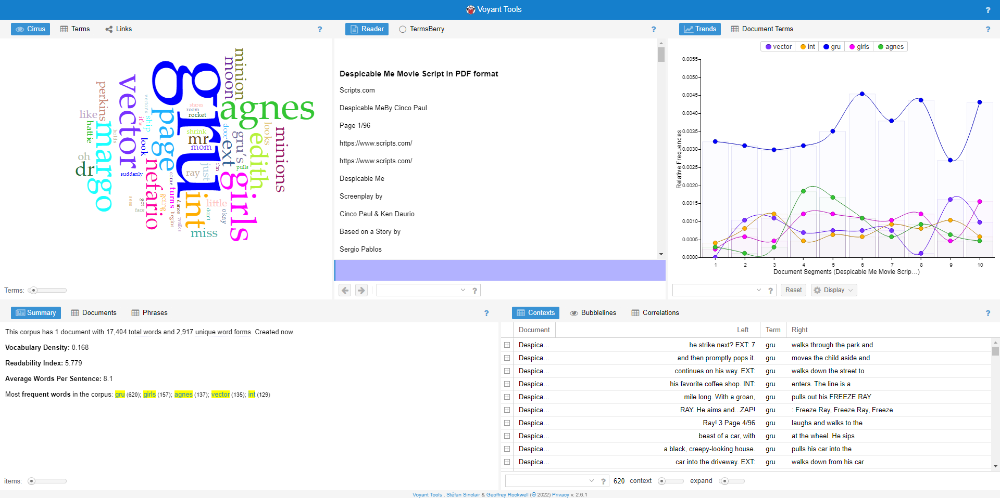

The title that I worked with was Megamind.
- The spread between common words in Megamind tend to be relatively even.

The other title that I worked with was Despicable Me.
- The first common word I noticed after analyzing the text, especially after utilizing Voyant, was the main character's name: "Gru."
- What I have noticed between both texts are that they are focused on their respective main characters "Gru" and "Megamind" within the scrpit.
- The word "minion" also appears very frequently between each of the movie's scripts.